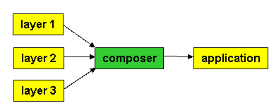
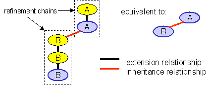

|
|
Composition and the Jak Language |
A feature is a basic unit of functionality whose implementation requires a collaboration of different classes. Unlike typical packages that encapsulate complete classes, a feature can also encapsulate fragments of classes -- i.e., data member additions, new methods, and method overrides of previously existing classes. Compositions of features yield sets of fully-formed classes.
This description of a feature is only a brief introduction. In fact, features deal with many other representations than classes. To distinguish concepts from implementations, we will use the term layer to express our representation of features. There are many other ways of representing features beyond that capable in our tools.
A layer is a set of files that define a feature of an application. Code representations are expressed as .jak files. Composable makefile representations are expressed as build.xml.vm, build.xml.vm.prefix, and build.xml.vm.suffix files. And so on. An application and its file representations are constructed by composing layers using the composer tool:

Internally composer invokes a variety of tools to perform its task -- for example, it uses jampack and mixin to compose the .jak files of layers. Suppose the A.jak files from layers 1-3 are to be composed. composer instructs jampack or mixin to perform this composition to produce a composite A.jak file (step #1 below). This file is then translated to its A.java counterpart by the jak2java tool (Jak-to-Java).

jampack and mixin both compose .jak files, but do so in different ways. Recall that composed files form a refinement chain. A refinement chain is a linear inheritance chain where the bottom-most class of the chain is the only class that is instantiated. In the example above, the file A.jak (from layer 1) is the root of a refinement chain. File A.jak (from layer 2) is its immediate subclass, and A.jak (from layer 3) is its subclass. jampack "squashes" or flattens this chain into a single class.
jampack is not necessarily the composition tool of choice. Why? Think about the process of debugging a squashed .jak file. You translate the .jak file to a .java file and run it. When tracking down errors, you'll make changes to the .jak file to repair your program, retranslate to .java, and run it again. Once you have fixed the problem, you must manually propagate the changes in the composite .jak file back to its original layer files. There is no other way to propagate these changes. This is a tedious and error-prone task.
mixin doesn't flatten refinement hierarchies, but rather retains layer relationships as an inheritance chain. mixin produces a single file that contains an inheritance hierarchy of classes, interfaces, or state machines, where only the bottom-most entity of the chain is "public". This separation of layers is exploited by another tool called unmixin that automatically propagates changes from the composed .jak file back to its original layer files (see figure below). Thus, we hope that it will be easier to debug a mixin-composed .jak file, make changes to it, and then automatically back-propagate changes to the layer files. When a production version of a file is to be produced, jampack can be used.
Note: eventually we will have a debugger, where users will be debugging composed .jak files, and not their generated .java counterparts.

| This document covers the following topics: |
Details about particular tools are found by following the links below. |
Layer Packages and Files |
All .jak files that comprise an layer belong to an layer package. The format of a .jak file is:
layer layer-name;[import-statements][Local_Id declarations]declaration |
(1) (2) (3) (4) |
Line (1) defines the name of the layer package (and is syntactically similar to a Java package declaration). Import statements are optional (2). Local identifier declarations follow (3). Finally, the declaration of an interface, class, state machine (or whatever) completes the file (4). Like packages, all files belonging to an layer package must reside in the same physical directory. As a general rule, nested structures (e.g., nested interfaces, nested classes, nested state machines) in layer files are not allowed. Anonymous classes and anonymous interfaces that are written in pure Java are permitted.
A typical refinement chain begins with a root specification followed by zero or more refinements. A specification can be an interface, class, or state machine. The general format of a root specification for X (i.e., interface X, class X, or state machine X) is:
[modifiers] specification X ...
while the general format of a refinement of X is:
[modifiers] refines specification X ...
Two specifications can be composed if they deal with the same type and name (i.e., both must define/refine interface X, or both must define/refine class X, or both must define/refine state machine X). Remember these rules, as they will not be repeated in the following sections.
To understand a general model of refinements that we use, make the following analogy:
A refinement applied to a refinement is a composite refinement. A refinement applied to a constant is a composite constant. A constant k applied to a refinement or constant is k. (This is replacement -- a constant replaces whatever it is applied to). Both mixin and jampack follow this rule.
$Pack Identifier |
Consider the following Jak class:
| layer X;
class Y { |
When this file is composed with other files, the 'layer X' statement will be revised to 'layer E', where E is the name of a feature expression. However, the reference "X.Y()" is not updated. Consequently, composed files will not be compilable. Reference "X.Y()" must be translated to "E.Y()" to be correct.
The solution we have adopted is to require the use of the identifier "$pack", which represents the name of the composed package. A correct specification of the above class is:
| layer X;
class Y { |
When this file is composed, the $pack identifier remains unchanged. Only when the file is translated to Java will $pack be replaced with the correct name. This addition to Jak will allow for complex package inter-referencing.
Interfaces |
Root Interfaces |
The .jak representation of a root interface is virtually identical to a Java interface. The rules to remember are:
Here is an example:
layer IBase1; // mandatory -- this file belongs to the IBase1 layer
import x.y.z.*;
import java.io.Serializable;
interface MyInt extends FooInterface {
int Silent = 0;
void foo() throws AFit;
SomeType bar( int x );
}
Interface Refinements |
An augmentation of an interface is a refinement. A declaration of an interface refinement has the following format:
[modifiers] refines interface name [ extends interface-list ] { [body] }
Only one interface refinement can be defined per .jak file; there can be no other declarations (nested or otherwise). Here is an example that refines the interface MyInt, defined above:
layer Iext1; import java.io.Serializable; public transient refines interface MyInt extends yyy, java.io.Serializable { int Terse = 2; void foo() throws SomeException; int increment( int i ); }
This refinement adds modifiers (public, transient), extending interfaces (yyy, java.io.Serializable), new constants (int Terse=2;), exceptions (SomeException) to existing methods, and new methods (int increment(int i)). When this refinement is composed, the modifiers of this refinement are added to the interface definition that is being modified, and so too the extending interfaces and methods are added. The same for import statements. In principle, the declarations that are highlighted in yellow are added to interface definition that is being modified.
Note: The details by which jampack and mixin compose interfaces and refinements are different. In principle, producing a program using either tool should produce semantically equivalent programs. However, this is not yet always the case. The differences are minor, so read on.
The New and Overrides Modifiers |
A convenient and optional feature is to designate methods of a refinement by the modifiers "new" or "overrides". "new" means that a refinement introduces a new method whose name should not be used by a method that was previously defined in the refinement chain. "overrides" means that the refinement is augmenting a previously defined method. jampack generates an error if it detects that the conditions for "new" or "overrides" are not satisfied. As an example:
refines interface MyInt extends java.io.Serializable {
overrides void foo() throws SomeException;
new void barrr();
}
The above interface defines a new method (barrr) and overrides a previously defined method (foo) of the MyInt interface.
Note: overrides and new are checks that are relative to a refinement chain, and do not apply to methods inherited from interfaces other than MyInt.
The use of "new" and "overrides" helps avoid inadvertent capture; these modifiers should be used to guarantee that a method being defined by a refinement is in fact a new method or does override an existing method.
Note: mixin ignores the new and overrides modifiers, and consequently does not report errors. This is one difference between the mixin and jampack.
Classes |
Root Classes |
The .jak representation of a root class is virtually identical to its Java counterpart. The rules to remember are:
An example is:
layer ClassBase;class bar extends foo implements baz { void donothing() { } }
Note the class bar is a subclass of class foo -- this is OK as subclassing is different than refinement (more later).
Class Refinements |
A class refinement declaration has the following format:
[modifiers] refines class name [ implements interface-list ] { [body] }
Only one class refinement can be defined per .jak file; there can be no other declarations (nested or otherwise). A refinement of bar is:
layer classExt;
import java.io.Serializable;
public transient refines class bar {
int Terse = 2;
void foo() throws SomeException {}
}
This refinement adds an import statement, modifiers (public, transient), a data member (Terse=2) and a function (foo) to class bar
The New and Overrides Modifiers |
See previous section on new and override modifiers for interfaces. Exactly the same ideas apply to classes.
The Super Construct: Invoking Methods of Parent Classes |
The concepts of subclassing and refinement are very similar, but are NOT identical. Consider the figure below that shows that B is a subclass of A, and that B is refined twice and A is refined once.

Since we only instantiate the most refined versions of a class, the figure on the left is equivalent to the the subclassing hierarchy on the right. That is, both refinement chains can be squashed into individual classes to yield the figure on the right. (This, in fact, is what jampack does).
Squashing refinement hierarchies correctly requires symbol table (e.g., type) information, which unfortunately our tools don't have. Here are the rules to follow.
A base class (i.e., the root of a refinement
chain) can always use super and super() calls. They have the
same meaning as in Java.
A class refinement (i.e., a subclass within a
a refinement chain) should generally use only Super() and Super()()
calls. Jak2java will translate Super() calls into super
calls, and Super()() calls into super() calls. Super()
means invoke the previously defined method in the refinement chain.
Super()() means invoke the previously defined constructor in the refinement
chain. See rule 3 for this().
this(): is used to invoke a
constructor that is defined within any class of the refinement chain.
To make the conversion of legacy applications into Jak files easier, a method can call Super() or super() but not both. If Super() is present, the method is interpreted as a method refinement. If super is present, the method is considered an introduction that invokes the true super-method. Super() and super cannot both be present in a method, because (as you can see from the above figure), calling the previous incarnation of a method and the true super-method are not the same, and there is no language mechanism which allows method refinements to call the true super-method. (Of course, you could create a method yourself that calls 'super', and get around the problem in this way).
The Super construct is:
Super( <list of types> ).method( <list of arguments matching the list of types> )
To illustrate, suppose a root class has method foo:
class root {
void foo( int x, double y, String z ) {...}
}
A refinement must use the Super construct to reference foo:
refines class root {
void foo( int x, double y, String z ) {
Super(int,double,String).foo(x+1,y+2.0,"xxx"+z); // functionally equivalent to
// super.foo(x+1,y+2.0,"xxx"+z);
}
}
Both jampack and mixin will report an error whenever super is used.
The Super Construct: Invoking Constructors of Parent Classes |
The primary difference between refinement chains and a linear inheritance hierarchy lies with constructors. Constructors are not inherited in subclassing hierarchies, but they are inherited in refinement chains. Thus, the set of constructors of the bottom-most class of a refinement chain is the union of the set of constructors provided by the root class and each extension of the chain.
Constructors obey special rules in refinement chains. First, a special language construct is used to refine constructors. Second, Java allows programmers to reference previously defined constructors using the this(..) and super(..) constructs. this(..) is permitted in .jak files, but super(...) is not for the same reasons outlined in the previous section. Until we have symbol table (e.g. type) information, the Super(..)(..) construct must be used instead. Its syntax is:
Super( list-of-types )( list-of-arguments-matching-the-list-of-types )
To illustrate, suppose a root class has a constructor:
class root {
root( int x, float y, String z ) {...}
}
A refinement can reference this constructor using Super:
refines class root {
root( int x, float y ) {
Super(int,float,String)(x+1,y+2.0,"xxx"); // functionally equivalent to
// super(x+1,y+2.0,"xxx"+z);
}
}
Both jampack and mixin will report an error when super(..) is used.
Constructor Refinement |
Constructors are defined just as they are in Java. Consider:
class one { int a; public one(int x) { a = x; } }
The following refinement of class one adds a new data member and refines the integer constructor to initialize this member:
refines class one { int doubleA;refines one(int x) { doubleA = 2*x; } }
The syntax of constructor refinement is simple: "refines" followed by the constructor signature, followed by the additional code that is to be executed. In principle, the composition of the above "constant" and "refinement" is equivalent the concatenation of the refining constructor code to the end of the original constructor code:
class one { int a; int doubleA;public one(int x) { a = x; doubleA = 2*x } }
There are simple rules to guide your designs:
a constructor can be defined at most once in a refinement chain.
a constructor can be refined any number of times in a refinement chain.
Refining Static Methods |
Java supports static method refinement, although it is not well-known. The top class below defines a static method foo, the bottom class extends foo:
class top { static void foo() { /* do something */ } }class bottom extends top { static void foo() { /* something before */ top.foo(); /* something after */ } }
That is, as long as you explicitly reference the name of the superclass, you can invoke its static methods. Since we don't know the name of the superclass in a refinement, we extend the semantics of Super(...).meth(...). Recall that Super(...) references the superclass methods of an object. In the case of static methods, Super(...) references the superclass itself. So the static foo method of the bottom class would be expressed in .jak as:
static void foo() {
/* something before */
Super().foo();
/* something after */
}
With the Super() construct, you can reference any static method of a parent class. Typically, however, you'll only reference the method that you are refining.
State Machines |
Root State Machines |
A root state machine can be:
Each is specified using the following syntax, where bold phrases are parameters and [bracketed] phrases are optional:
[modifiers] State_machine name [implementsClause] SDClassBody[modifiers] State_machine name extends supername [implementsClause] SDClassBody[modifiers] State_machine name extends class supername [implementsClause] SDClassBody
The body of a state machine (SDClassBody above) has the following syntax:
|
(1) (2) (3) (4) (5) (6) |
The semantics of these concepts is specified elsewhere . Observe the following:
States a, b, c; States e, f, g, h; // and so on
An example is:
State_machine root { Delivery_parameters( M m ); Unrecognizable_state { ignore(m); } States g, h, i;Transition e1 : g -> h condition m!=null do { gh(); } Transition e2 : h -> i condition true do { hi(); } Exit h { /* action code */ } void gh() { /* gh action */ } void hi() { /* hi action */ } void anotherAction(int f) { /* some action */} }
The complete grammar and semantics for state machine specifications are presented elsewhere.
State Machine Refinements |
A state machine refinement has the following format:
[modifiers] refines State_machine name [implementsClause] SDExtBody
Only one state machine refinement can be defined per file; there can be no other declarations. The body of a state machine refinement (SDExtBody above) has the following syntax:
{ [ Otherwise_default block ] (3)[ states-list ] (4)[ ES-list ] (5)[ field-and-method-declarations ] (6) }
Again, the semantics of these concepts are explained elsewhere. However, keep the following in mind: states are unique and can be declared only once. (So if a root or refinement defines state "A", no other refinement can redefine state "A"). The same holds for transitions. Refinements of states and transitions are explained elsewhere.
Local Identifiers and the Problem of Inadvertent Capture |
mixin and jampack are designed to compose specifications (i.e., hierarchies of classes, interfaces, etc.) by macro expansion. A standard problem of macro-expansion is inadvertent capture. It arises when variables in different classes are given the same names, and ambiguity arises when classes are composed. Consider the following class hierarchy:
class top {
int i;
... System.out.println(i); ...
}
class bottom extends top {
double i;
... System.out.println(i); ...
}
The above is a legal Java program; the reason is that variable scoping differentiates the variable named "i" in class bottom from the variable named "i" in class top. Now, look what happens when top and bottom are blindly squashed into a single class:
class top {
int i;
double i; // illegal
... System.out.println(i); ... // ambiguous
... System.out.println(i); ...
}
That is, there are two variables named "i" and now references to variable "i" are ambiguous -- it is not obvious which variable is being referenced. This is typical of inadvertent capture. You will encounter such problems because of the way inheritance hierarchies are squashed. The ambiguous (and incorrect) code above will be produced by our tools if class top were composed with the following refinement:
refines class top {
double i;
... System.out.println(i); ...
}
The Local_Id Declaration |
A standard way to avoid inadvertent capture is to declare identifiers "local" to a particular class, and have their names "mangled" so that they are forever unique. Inadvertent capture is a bit more difficult because identifiers are local to an layer, and a layer encapsulates many artifacts (e.g., interfaces, classes, state machines) and their refinements. For example, each class can reference variables and methods that are local to other classes of that layer. So assigning a mangled name to an identifier must be done consistently across all artifacts of an layer.
Our solution is to introduce a Local_Id declaration which lists the identifiers that are local to an layer and that are to be mangled. In effect, the translation of a Local_Id declaration is a textual search and replace performed on the body of the declaration (class, state machine, etc.) thereby yielding the correct specification. As an example, a way to declare class top above is:
Local_Id i; // list of names that are local to an layer, and are to be mangled
class top {
int i;
... System.out.println(i); ...
}
When top is composed, the name "i" is mangled -- i.e., changed into a unique identifier. Assume the name mangling changes "i" to "i$1", an instantiation of top yields:
class top {
int i$1;
... System.out.println(i$1); ...
}
The actual mangling used is <variableName>$$<layerName>.
In general, the "localization" process is to (a) remove all Local_Id declarations, (b) mangle the names of all identifiers listed in Local_Id declarations, and (c) perform the composition of the resulting files. Also, note that the Local_Id declaration(s) list all of the identifiers that are local to an layer. Not all identifiers listed need be present in the body of a root or refinement specification. That is, an identifier can be listed, but it need not be present in the file itself.
Local Classes, Interfaces, and State Machines |
The Local_Id declaration is useful for identifiers of methods and data members unique to a particular layer. However, the names of classes, interfaces, and state machines should not be mangled using Local_Id declarations. If you want to have classes, interfaces, and state machines that are local to a particular layer AND that they are never to be inadvertently refined, give them a name that is unique to that layer -- instead of "foo" use "foo__<layerName>". By convention, such names will be unique to an layer and cannot be modified by other files, provided that others follow these conventions.
Copyright © Software Systems Generator Research Group. All
rights reserved.
Revised: June 25, 2007.